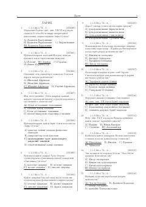

TTO'zbekiston va Markaziy Osiyo tarixi bo'yicha test savollari to'plami.
Bu kitob O'zbekiston va Markaziy Osiyo tarixi bo'yicha test savollar to'plamidir. Savollar qadimgi davrlardan tortib, Kushon, Ahmoniylar, Makedoniyalik Aleksandr yurishlari va boshqa tarixiy mavzularni qamrab oladi. To'plam ham kirill, ham lotin yozuvida taqdim etilgan.